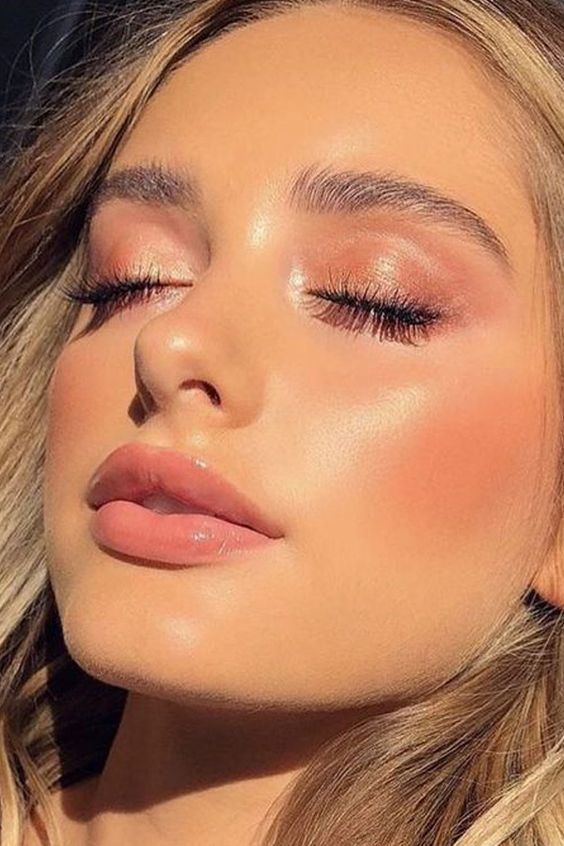
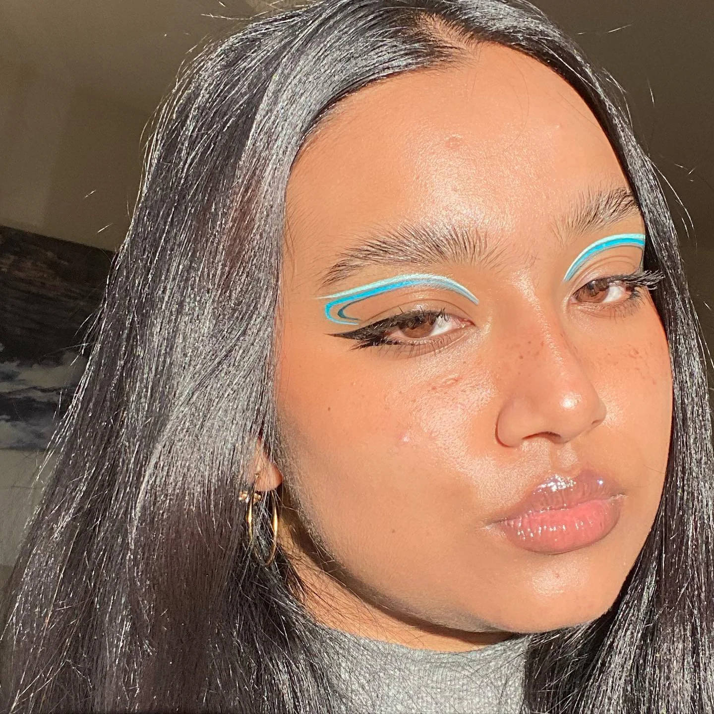
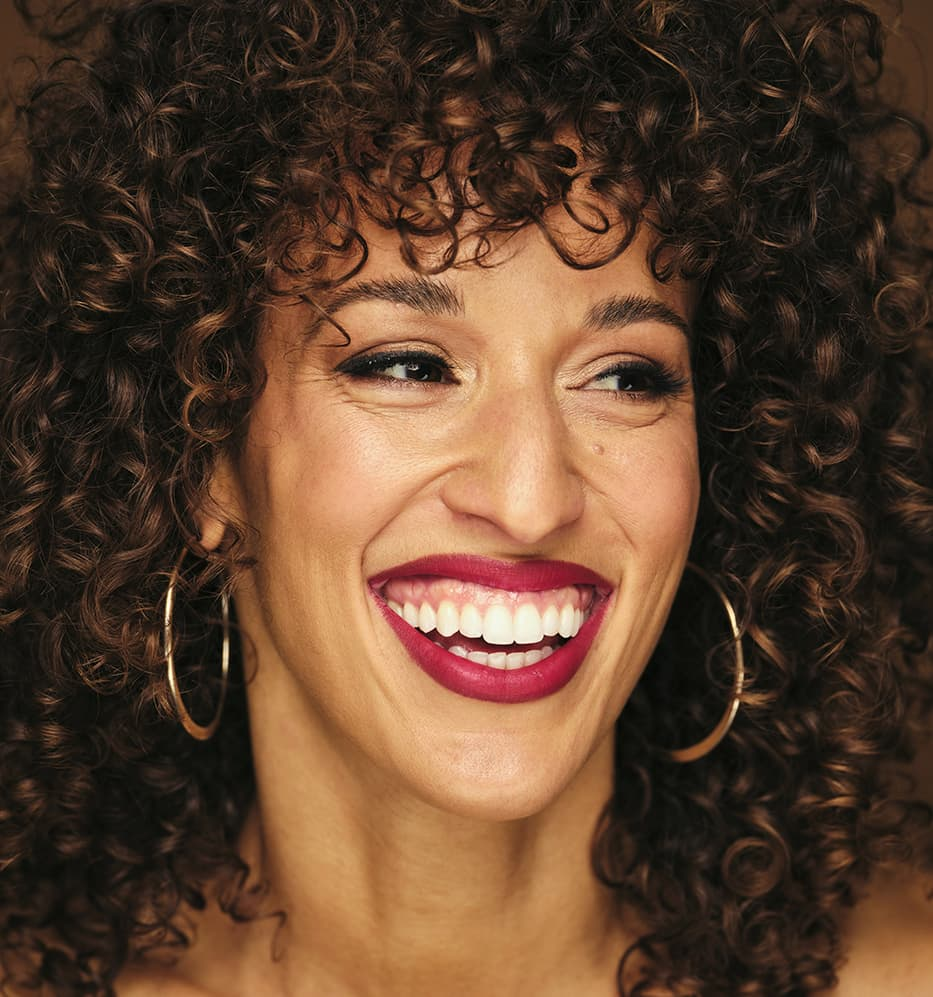

Pele
Esse ano teremos como tendências as peles viçosas, luminosas, com bastante glow, e seus aliados para esse efeito incrível são as técnicas de skincare e produtos de make cremosos e bem iluminados.

Fala de um profissional:
“A rotina de skincare, inclusive antes da make, é um caminho sem volta que se solidifica a cada dia, e que garante um resultado de beleza saudável e clean. A textura desses cosméticos garante o efeito luminoso na pele e é complementado com produtos de make: primers, bases, corretivos, iluminadores e blushes cremosos ou com luminosidade refinada. Blush siiiiim, sempre. Aquele que surge da pele e que não tem fronteiras. A pele não terá contrastes marcantes”, afirma.
Olhos
Para os olhos teremos como tendências, os delineados gráficos, sombras coloridas, metalizadas, glitter e pedraria. Inclusive, é possível aplicar essas técnicas em uma mesma maquiagem.

Fala de um profissional:
“Teremos muito forte a criatividade dominando as técnicas clássicas. Vale brincar, se divertir, criar, ser original. Enfim, se expressar! Também teremos olhos alongados nos cantos externos, em direção às têmporas, feitos com sombras e/ou traços e a sobreposição de delineados gráficos em sombras e brilhos”, comenta Sadi.
Sobrancelhas
Para as sobrancelhas a tendência será utilizá-las de uma forma mais natural, usando apenas pomada ou gel incolor de preferência para conseguir esse efeito, penteando-as sempre para cima.


Fala de um profissional:
“Os fios serão valorizados, penteados ou definidos com gel ou pomada, ou ainda desenhados para ficarem evidentes no visual. Os produtos para sobrancelhas com tratamento também serão queridinhos em 2023”, fala o maquiador.
Lábios
Para os lábios teremos a volta das bocas ousadas, com cores marcantes e escuras como, ameixa, vinho e bordô, trazendo uma estética mais "dark". Já os acabamentos dessas bocas, será um efeito mais molhado, podendo ser usado gloss ou os próprios batons com essas texturas.

Fala de um profissional:
“A Viva Magenta é uma cor incrível e muito comercial, que com certeza vai causar muito. Aliás, essa cor é tão versátil que promete vir não só na boca, mas também em sombras, delineados, e em blushes. Aposto que ela vai dominar o mundo nesse ano!”, finaliza o maquiador.